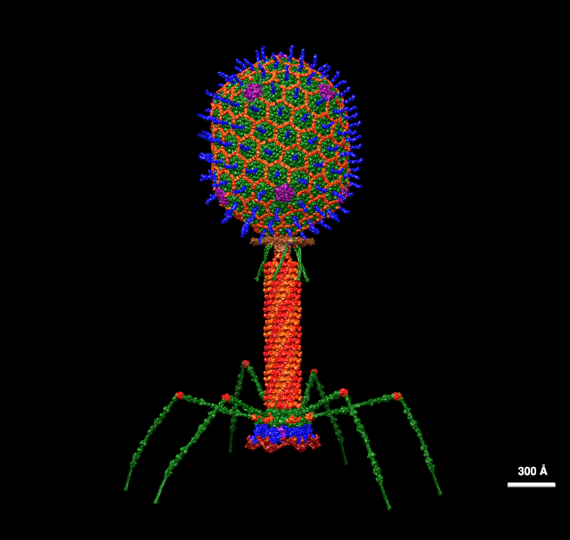

Introduction
- Earth is the only place in the Universe currently known to have life
- Earth is teeming with life. Scientists refer to the enormous variety of life on Earth as biodiversity
- There is also a gargantuan range in complexity, from single-celled organisms (e.g. amoeba) to humans. The human body is made up of trillions of cells
- We can't say for sure exactly how many species are alive on Earth today, but some studies put it as high as 1 trillion
- Of all the species we currently know of, most are insects
- Of all species that have ever existed on Earth, 99.9% are now extinct
- Most life on Earth (an estimated 86%) is yet to be discovered
- Living things are part of ecosystems. Examples include deserts, forests, rainforests, savanna, grassland, tundra, and coral reefs
- 80% of Earth's species live on land, 15% in the oceans, and 5% in freshwater
- More than 70% of the Earth's surface is water - as Arthur C. Clarke put it, it should be called Ocean, not Earth!
- The most numerous organism on Earth is the bacteriophage (pictured below) - these are viruses that kill 15-40% of all bacteria in the oceans every day! 
- An estimated 10,000,000,000,000,000,000,000,000,000,000 (10^31) bacteriophages are alive on Earth at any one time
- All the bacteriophages on Earth together would weigh 1,000 times more than Earth's entire population of elephants!
- Microbes are by far the most numerous and resilient organisms. They were here before us and will almost certainly be here after us
- Steven Jay Gould (American paleontologist, evolutionary biologist, and historian of science, 1941-2002) once said we should forget about the Age of Dinosaurs, forget about the Age of Man - we've always lived in the Age of Bacteria!
- Life on Earth has evolved over billions of years. Scientists refer to this as the Theory of Evolution or, to give it its full name, the Theory of Evolution by Natural Selection
- All the similarities between living things today points towards a common ancestor
- Humans have been on Earth for a tiny fraction of the planet's history. Extract below from the book A Short History of Nearly Everything (Bill Bryson, 2003)
- Click here to open the tree of life
Atomic structural model of bacteriophage T4 in UCSF Chimera software using pdbs of the individual proteins. Dr. Victor Padilla-Sanchez, PhD, CC BY-SA 4.0, via Wikimedia Commons.
If Earth's history were compressed into a single day, life would get going at four a.m. with microbes. It takes until 8:30 p.m. for sea plants and jellyfish to show up. Around 10 p.m., land plants emerge, and around 11 p.m., the dinosaurs turn up, lingering until 11:40 p.m. Humans show up at 11:59 p.m., and they've so far been on the scene for just one minute.

Eukaryotes and some examples of their diversity; compilation. (originally) various authors, compilation by Eryn Blaire, CC BY-SA 3.0, via Wikimedia Commons.